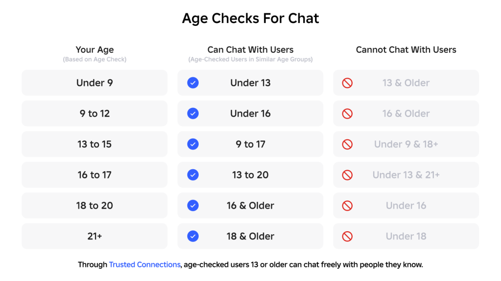
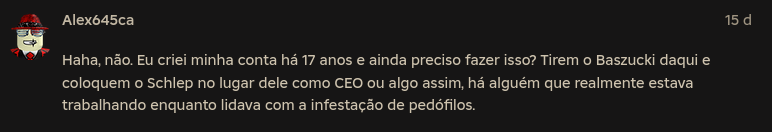

Os protestos contra o Felca no Roblox
Na última semana viralizaram protestos "engraçados" dentro da plataforma Roblox. A reivindicação? A segmentação por idade do chat no jogo. Vamos conversar.
Veja no canal:
https://xcancel.com/Felcca/status/2011627819089145977
https://www.metropoles.com/brasil/apos-revolta-do-roblox-eca-digital-passa-a-ser-executado-pela-anpd
- Temos duas notícias aqui, elas tem relação, mas é bom esclarecer. Temos o chamado 'ECA Digital' que é baseado na 'Lei Felca' e fiscalização da ANPD
As regras do “ECA Digital”
- A lei estabelece que as plataformas digitais terão de usar métodos para confirmar a idade dos usuários.
- Menores de 16 anos somente poderão utilizar redes sociais com perfis vinculados a responsáveis.
- A norma determina que as plataformas devem criar regras para evitar e combater crimes contra menores.
- Empresas terão de trabalhar para identificar e remover conteúdos nocivos aos menores, além de enviar relatórios e denúncias às autoridades competentes.
- A lei proíbe publicidade voltada a crianças e adolescentes. Impede também a venda das chamadas “caixas de recompensa” — ou loot boxes, em inglês — dentro de jogos eletrônicos direcionados ou provavelmente acessados por menores.
- Punições vão escalar de multar até proibição das atividades no Brasil.
- Regras vão entrar em vigor em 17 de março
A agência, criada em 2018 para fiscalizar a Lei Geral de Proteção de Dados Pessoais (LGPD), foi designada pelo presidente Luiz Inácio Lula da Silva (PT) para punir as empresas de tecnologia por eventuais infrações contra crianças e adolescentes.
- Temos o Roblox implementando medidas para se adaptar a essa lei e diversas outras por todo o mundo: Austrália, Reino Unido, estados do EUA e mais...
Os menores chegaram a atribuir as mudanças ao influenciador Felca e ao “ECA Digital”. O Roblox afirmou à reportagem, no entanto, que a medida faz parte de um movimento global e que não tem “relação direta” com a nova legislação brasileira.
https://corp.roblox.com/newsroom/2026/01/roblox-age-checks-required-to-chat

- Como funciona a verificação de idade? Na realidade é uma estimativa por IA e a possibilidade de mandar um documento de comprovação.
- Feita pela Persona (do nosso sociopata favorito Peter Thiel)
- Usuários já estão reportando falsos positivos da verificação
- Expõe os dados de crianças e adolescentes a vazamentos ou venda/treinamento de IA
- A medida de segmentação por idade é uma maneira de mitigar o problema do assédio que as crianças sofrem, mas o modelo de negócios do Roblox (e o capitalismo) é o problema e diversos usuários já usam plataformas externas pra coordenar suas conversas no Roblox
- Muitos usuários de Roblox são adolescentes e adultos que inclusive ganham dinheiro com o ecossistema de criação de jogos. É importante entender que não são apenas crianças lá dentro
- Os protestos embora engraçados são em sua maioria de adolescentes e adultos que usam o Roblox. Crianças engrossam a base de usuários, mas não escreveram 'se não tem chat, que usem placas'

- Já rolaram outros protestos no Roblox, eles também não foram feitos por crianças
https://www.teenvogue.com/story/kids-are-protesting-ice-in-roblox
- Não é de hoje que o Roblox tem esse tipo de problema e a própria comunidade organiza denúncias e demanda por soluções da empresa:
- Roblox em 2025 chegou a ter uma avaliação de mercado de U$80bi e a pressão para implementar essas medidas é reflexo da regulamentação e pressão popular.
- Porém, como a maioria das empresas de tecnologia isso é feito de forma a criar um mercado de validação de identidade e coleta de dados. Gerando diversos outros problemas (para nós)
- A solução do problema criado pelas big techs vai ser entregar mais dos nossos dados para big techs
- O argumento de que seria muito custoso resolver o problema é parcialmente verdade. Como usar esse modelo de negócios sem expor as crianças?
- Em resumo: Pais trabalham o dia todo, não tem tempo para acompanhar os filhos nas suas atividades. Crianças ficam vulneráveis à exploração da plataforma e predadores.
- Segmentação por idade é uma mitigação para apenas parte do problema e gera vários outros. Enquanto o Roblox (e as 'plataformas sociais' em geral) forem simuladores de trabalho precarizado para adolescentes o potencial de abuso não só existe como será explorado pela empresa e pessoas mal intencionadas.